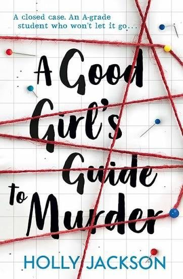

A Good Girl's Guide to Murder
Synopsis
A determined student investigates a closed murder case for a school project and starts to uncover the truth.
A Knock at the Singh Door
Summary of chapter 1
Pip, a teenager about to start her last year of school, stands outside the Singh family’s house. The family has been shunned in her town since five years earlier, when their son Sal was blamed for the disappearance and presumed murder of a schoolgirl named Andie Bell.
She knocks, and meets Sal’s younger brother Ravi. Nervous, she babbles, and then explains that she is doing a school project and believes Sal did not do it. She wants to prove it.
The chapter ends with the first entries in Pip’s project log, which lay out what is known about Andie’s disappearance, and with notes from an interview with an expert on missing persons.